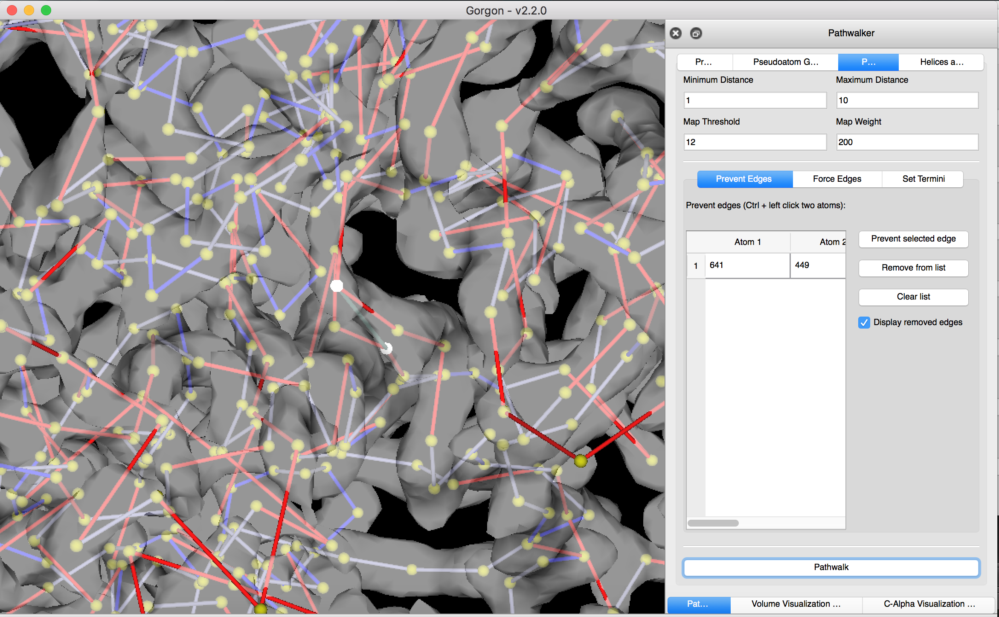
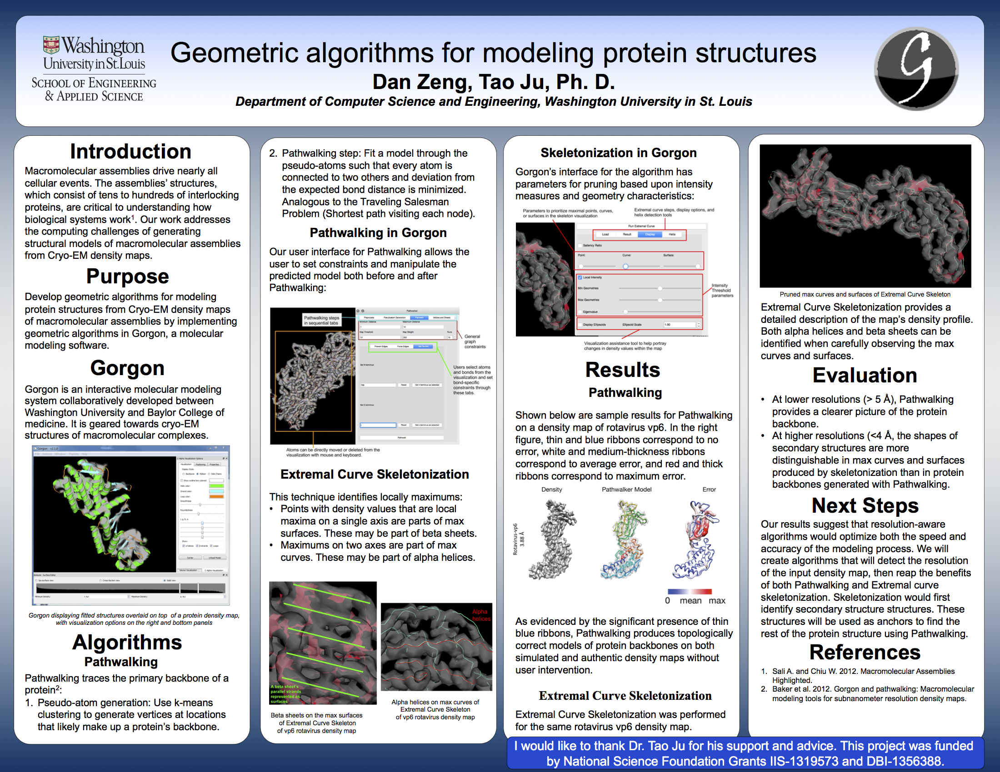

About Me
Future Computer Science Ph. D student with research interests in computer graphics, data analytics, and geographic information systems.
Recent Projects
Gorgon
I developed the interface for pathwalking in Gorgon. Pathwalking is an algorithm which uses a traveling salesman heuristic to predict the likeliest path of a protein backbone. My interface runs the algorithm on a panel without using the command line, and allows the user to prevent or add bonds, set termini, move or delete atoms, and identify secondary structures after pathwalking.
Summer 2016 Research Poster
I presented my findings at the 2016 Fall Undergraduate Research Symposium.
Resume

Visualizations
Some interesting visualizations I did for my Information Visualization course